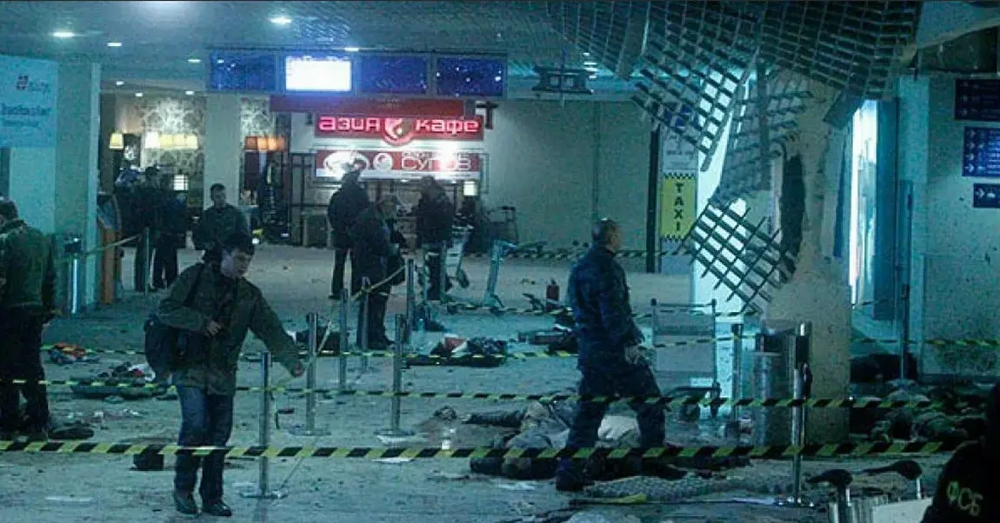

Теракты в России с 2000 года
Теракт в метро на Пушкинской
В центре Москвы в подземном переходе под Пушкинской площадью прогремел взрыв, после чего начался пожар. Бомба находилась в сумке, которая была оставлена у одного из киосков. На месте погибли 7 человек, еще 6 скончались позже в больницах от полученных травм. 118 человек, в том числе 6 детей, получили ранения различной степени тяжести. Были разрушены торговые павильоны и частично ‑ конструкции перехода. Как установило следствие, сработало самодельное взрывное устройство весом около 800 граммов в тротиловом эквиваленте, которое содержало гексоген.
Теракт на центральном рынке во Владикавказе
Десять человек погибли, 40 ранены. Исполнители теракта Руслан Чахкиев и Мовсар Темирбиев, уроженцы ингушского поселка Карца Северной Осетии, были задержаны и в июле 2002 года осуждены. Чахкиев приговорен к 24 годам лишения свободы, Темирбиев ‑ к 18 годам.
Теракт в Каспийске
В центре Каспийска (Дагестан) во время торжеств, посвященных Дню Победы, взорвана бомба. Погибли 43 человека, в том числе 12 детей. Организатором преступления, по версии следствия, являлся уроженец Буйнакска (Дагестан) Раппани Халилов, лидер одного из бандформирований, действующих в Чечне и Дагестане. Спонсором преступления, по версии следствия, выступал подданный Королевства Саудовская Аравия Абу Аль‑Валид Аль‑Хамиди, уничтоженный в ходе операции федеральных сил в 2004 году.
Теракт на Дубровке («Норд-Ост»)
Группа вооруженных лиц захватила в заложники около 800 человек в московском Театральном центре на Дубровке. В ходе штурма здания и освобождения заложников уничтожены все нападавшие (41 человек). Из‑за несогласованности действий по использованию парализующих средств при штурме здания и эвакуации людей, оказавшихся в зоне их поражения, погибли 117 заложников. Пятеро заложников были застрелены террористами. Организаторами террористического акта по данным следственных органов выступали житель Чечни Руслан Эльмурзаев, уничтоженный в ходе штурма здания на Дубровке, а также житель Ингушетии Асланбек Хасханов (задержан в Назрани в мае 2003 года).
Теракт в Грозном
Два начиненных взрывчаткой грузовика, прибывших с территории Ингушетии, врезались в комплекс Дома правительства Чечни в Грозном и взорвались. Погибли 83 человека, еще около 200 получили ранения. Здание было полностью разрушено. Ответственность за террористический акт взял на себя Шамиль Басаев. Одним из террористов‑смертников, осуществившим теракт, оказался уроженец Ачхой‑Мартана Гелани Тумриев.
Теракт в Знаменском, Чечня
Управляемый террористом‑смертником автомобиль "Камаз", начиненный взрывчаткой, пробил шлагбаум и взорвался у зданий администрации Надтеречного района и районного УФСБ. Погибли 60 человек, более 200 человек были ранены. Теракт осуществлен группой Хож‑Ахмеда Душаева. В июне 2003 года организатор преступления был уничтожен в ходе спецоперации в селе Экажево Ингушетии.
Теракт в Тушино, Москва
В результате двух взрывов во время многотысячного рок‑фестиваля "Крылья", проходившего на Тушинском аэродроме в Москве, погибли 16 человек, включая двоих женщин, приведших в действие взрывные устройства, 57 человек ранены. Террористками‑смертницами оказались Зулихан Элихаджиева и Марьям Шарипова.
Теракт на 1‑й Тверской‑Ямской улице в Москве
В ресторане на 1‑й Тверской‑Ямской улице в Москве была задержана жительница Чечни Зарема Мужихоева, намеревавшаяся взорвать бомбу, спрятанную в сумке. Во время операции по обезвреживанию бомбы погиб взрывотехник, майор ФСБ Георгий Трофимов. В апреле 2004 года Мужихоева осуждена к 20 годам тюрьмы. Преступление было организовано террористической группой Магомеда Кодзоева и Рустама Ганиева.
Теракт в электричке "Кисловодск ‑ Минеральные воды"
Под вагоном электрички "Кисловодск ‑ Минеральные воды" произошли два взрыва, повредившие железнодорожное полотно. 7 человек погибли. 92 ранены. Суд признал виновным в организации подрыва электропоезда жителя Чечни Ибрагима Исрапилова. Исрапилов осужден к 20 годам тюремного заключения. По показаниям осужденного, организатором и заказчиком теракта являлся один из лидеров бандформирований Доку Умаров.
Теракт в поезде "Кисловодск ‑ Минеральные воды"
Мощный взрыв произошел во втором головном вагоне поезда Кисловодск‑Минводы, когда электропоезд отъехал от вокзала Ессентуков на 500 м. Погибли 44 человека, еще 156 пострадало, в том числе 62 ребенка. Расследование взял под личный контроль генпрокурор Устинов. Правоохранительными органами был задержан организатор теракта Ибрагим Исрапилов, который был приговорен к 20 годам лишения свободы.
Теракт в гостинице "Националь", Москва
Неподалеку от Кремля и здания Государственной Думы в Москве женщина‑самоубийца взорвала себя около гостиницы "Националь". Погибли шесть человек, более десяти получили ранения. По данным следственных органов террористкой‑смертницей была Хедижи Мангериева, уроженка чеченского села Курчалой.
Теракт на "Автозаводской"/"Павелецкой", Москва
В час‑пик сработало взрывное устройство в вагоне поезда московского метро, следовавшего от станции "Автозаводская" к "Павелецкой". Жертвами взрыва стали 40 человек, 134 получили ранения. По данным следственных органов, исполнителем‑смертником теракта был житель Карачаево‑Черкесии Анзор Ижаев, находившийся в розыске за ранее совершенные преступления. В марте 2004 года задержан подозреваемый в организации преступления уроженец Карачаево‑Черкесии Азрет Хубиев.
Теракт на стадионе в Грозном
В результате взрыва на переполненном людьми стадионе в Грозном погиб президент Чеченской республики Ахмад Кадыров, председатель госсовета республики Хусейн Исаев и еще пять человек. Бомба была заложена в трибуну и сработала во время празднования Дня Победы, ранены больше 40 человек. По сообщению Рамзана Кадырова, все причастные к теракту боевики были уничтожены.
Теракт на рынке в Самаре
Взрыв бомбы на рынке в Самаре. 10 погибших, 59 - ранено. По данным следственных органов, организатором теракта является бывший курсант Ростовского военного училища Павел Косолапов, а исполнителем преступления ‑ житель Казахстана Еркингали Тайжанов. Последний был задержан правоохранительными органами на территории Казахстана, но повесился в тюрьме.
Теракты в двух гражданских самолетах
Взрывы в двух гражданских самолетах, осуществленные с использованием террористок‑смертниц. В Тульской области разбился самолет Ту‑134, выполнявший рейс Москва‑Волгоград, а в Ростовской области ‑ Ту‑154, выполнявший рейс Москва‑Сочи. 89 человек, все пассажиры и члены экипажа обоих самолетов, погибли. Террористками‑смертницами оказались Аминат Нагаева и Сацита Джебирханова, уроженки Чечни. Организатор преступления - Шамиль Басаев.
Теракт на Рижской в Москве
Около станции метро "Рижская" в центре Москвы произошел взрыв. 11 человек погибли, около 40 получили ранения. Взрыв произведен не установленной следствием террористкой‑смертницей. По версии следствия в результате взрыва случайно погиб и организатор данного преступления, житель Карачаево‑Черкесии Николай Кипкеев, член террористической группы Ахмеда Гочияева.
Теракт в Беслане
В г.Беслане (Северная Осетия) отряд террористов под руководством Расула Хачбарова (известного также как Полковник) численностью более 30 человек (среди которых также были женщины) осуществил захват здания средней общеобразовательной школы №1. В заложниках оказались дети, их учителя и родители, пришедшие на праздничную «линейку». В течение более двух суток около 1300 заложников удерживались в заминированном здании школы. 3 сентября была осуществлена стихийно начавшаяся операция по освобождению заложников. В 13.05 произошел взрыв двух бомб, установленных террористами в спортзале, где находилась основная часть заложников. Итогом террористической акции стали более 330 погибших (в том числе 172 ребенка, а также 10 сотрудников Центра специального назначения ФСБ РФ (ЦСН ФСБ РФ) и 15 сотрудников милиции. Из боевиков остался в живых и был задержан лишь один ‑ Нурпаша Кулаев, которого Верховный суд Северной Осетии приговорил к пожизненному заключению.
Теракт в "Невском экспрессе"
На железнодорожном перегоне Бурга ‑ Малая Вишера (Российская Федерация, Новгородская область, Маловишерский район) под локомотивом пассажирского поезда "Невский экспресс", следовавшего рейсом Москва ‑ Санкт‑Петербург, сработало взрывное устройство, заложенное в насыпь железнодорожного полотна. В вагонах поезда находились 20 членов обслуживающей бригады и 231 пассажир. Травмы получили порядка 60 человек.
Теракт на станциях «Лубянка» и «Парк культуры»
В столичном метро на станциях «Лубянка» и «Парк культуры» произошло несколько взрывов, виновницами которых стали две террористки-смертницы. Ответственность за этот теракт взял на себя лидер «Кавказского эмирата» (организация запрещена на территории РФ) Доку Умаров. В результате погиб 41 человек. Еще 88 человек пострадали.
Теракт в Домодедово
В 16:32 в толпе встречающих произошёл взрыв. В центре оказались пассажиры из России и ряда других стран. Погибло 37 человек, пострадавших - 117. Взрыв, осуществлённый террористом-смертником Магомедом Евлоевым. В конце ноября 2015 года Следственный комитет закрыл уголовное дело о неисполнении требований транспортной безопасности (ч. 3 ст. 263-1 УК РФ). Его фигурантами являлись четверо топ-менеджеров аэропорта и четверо начальников милиции. После 53 месяцев расследования СКР установил, что в их действиях отсутствует состав преступления
Теракт в Волгограде
Взрыв в здании железнодорожного вокзала Волгограда прогремел 29 декабря в 12:45 мск. Бомба была закреплена на теле смертницы, террористка привела взрывное устройство в действие у рамок металлоискателей. В результате погибли 16 человек, около 40 получили ранения разной степени тяжести. В 2014 г. суд приговорил к 19 годам тюрьмы двух соучастников, которые предоставили террористам жилье, где они изготовили взрывчатку. Еще двое сообщников, которые помогли боевикам добраться в город, получили по 3 года и 10 месяцев лишения свободы.
Катастрофа A321 над Синайским полуостровом
Авиалайнер Airbus A321-231 российской авиакомпании «Когалымавиа» (торговая марка «Metrojet») был зафрахтован туристическим оператором «Brisco» и выполнял чартерный рейс 7К-9268 по маршруту Шарм-эш-Шейх—Санкт-Петербург, но через 23 минуты после взлёта с экипажем была потеряна радиосвязь, а сам лайнер исчез с радаров. Поисковые группы египетского правительства обнаружили обломки самолёта около Нахля; погибли все находившиеся на его борту 224 человека — 217 пассажиров и 7 членов экипажа. По данным МЧС России, большинство пассажиров было жителями Северо-Запада России, в основном из Санкт-Петербурга, Ленинградской, Новгородской и Псковской областей; также на борту находились 4 гражданина Украины и 1 гражданин Белоруссии. По данным ФСБ РФ, в хвостовой части самолёта произошёл взрыв самодельного взрывного устройства. Ответственность за теракт в первые дни после катастрофы взяло на себя Синайское подразделение террористической группировки «Исламское государство» (ИГ). Впоследствии было установлено, что СВУ находилось в отсеке негабаритного багажа в хвостовой части лайнера, куда оно было незаметно заложено и замаскировано нагромождением детских колясок и багажа сообщником террористов — сотрудником сервисной службы аэропорта Шарм-эш-Шейха.
Теракт в метро «Технологический институт» — «Сенная площадь», Санкт-Петербург
Взрыв неустановленного устройства произошел около 14:33, 3 апреля 2017 года, в вагоне поезда на перегоне между станциями метро «Технологический институт» и «Сенная площадь» в Петербурге. Национальный антитеррористический комитет координирует работу экстренных служб на месте событий. По версии Следственного комитета РФ, взрыв осуществил террорист-смертник Акбаржон Джалилов, гражданин России с 2011 года, узбек по национальности и уроженец Кыргызстана. По обвинению в подготовке теракта задержали 11 человек. В теракте пострадали 103 человека, 16 из них погибли (в их числе исполнитель теракта). В ряде публикаций говорилось о 108 пострадавших. В декабре 2019 года 11 человек, по мнению следствия, причастных к организации теракта, были осуждены на сроки от 19 лет лишения свободы до пожизненного заключения. 8 сентября 2022 года главный заказчик теракта Сирожиддин Мухтаров был ликвидирован Минобороны РФ в ходе группового авиационного удара в районе Эш-Шейх-Юсеф в сирийской провинции Идлиб.

Керченский стрелок
17 октября 2018 года студент политехнического колледжа в Керчи Владислав Росляков устроил массовый расстрел в учебном заведении. В настоящее время причиной такого жестокого поступка называют унижение студента сверстниками. Молодой человек расстрелял и подорвал на самодельной бомбе 20 человек, а после погиб сам. Еще 67 человек были ранены.
Взрыв в УФСБ Архангельска
31 октября 2018 года 17-летний анархист Михаил Васильевич Жлобицкий совершил самоподрыв в здании регионального управления ФСБ в Архангельске, в результате чего он сам погиб, а трое сотрудников ФСБ были ранены. Органы власти охарактеризовали случившееся как террористический акт.
Стрельба возле здания ФСБ в Москве
В четверг 19 декабря 2019 года около 18 часов Евгений Манюров, находясь около приёмной ФСБ на Лубянке, открыл стрельбу по сотрудникам ФСБ из полуавтоматического карабина «Сайга». Шестеро людей были ранены, впоследствии один из них скончался в больнице. Манюров добежал до площади Воровского, где в перестрелке убил дежурившего на ней сотрудника спецкомендатуры ФСБ, одетого в форму сотрудника ГИБДД, и попытался скрыться в Фуркасовском переулке. Сотрудники полиции оцепили район стрельбы. Прибывшие на место стрельбы сотрудники Росгвардии и полиции заняли позиции и отследили стрелка, который спрятался за колонной, после чего открыли стрельбу по нему. Четвертым выстрелом стрелок был убит. В рюкзаке нападавшего была обнаружена граната. По данным некоторых СМИ, при обысках в его квартире нашли семь единиц оружия.
Теракт на Крымском мосту
8 октября на Крымском мосту произошел подрыв грузового автомобиля, в результате загорелись семь топливных цистерн железнодорожного состава, частично обрушились два автомобильных пролета моста. Взрывом было обрушено около 250 метров шоссейного полотна, сгорело семь цистерн грузового поезда. Погибли 5 человек. Движение по мосту было полностью остановлено, что стало первым таким случаем со дня его запуска. ФСБ России заявила, что организатором теракта на Крымском мосту было главное управление разведки минобороны Украины и лично его руководитель Кирилл Буданов. Взрывное устройство закамуфлировали в рулоны со строительной полиэтиленовой пленкой на 22 паллетах общим весом почти 23 тонны. Позже эту версию подтвердил Следственный комитет России. В рамках расследования были задержаны пять россиян, а также трое граждан Украины и Армении. Всего, по информации СК РФ, в деле фигурируют 12 человек.
Расстрел на полигоне в Белгородской области
15 октября на полигоне Западного военного округа в Белгородской области двое граждан одной из стран СНГ открыли огонь из стрелкового оружия по личному составу одного из подразделений. Инцидент произошел во время занятий по огневой подготовке с добровольцами, желающими участвовать в специальной военной операции на Украине. При нападении погибли 11 человек, еще 15 с ранениями различной степени тяжести доставили в медучреждение. Нападавших удалось ликвидировать ответным огнем.
Подрыв на перегоне Итыкит — Окусикан Байкало-Амурской магистрали
Вечером 29 ноября на перегоне Итыкит — Окусикан Байкало-Амурской магистрали (БАМ) во время движения по Северомуйскому тоннелю в результате взрыва загорелся вагон грузового поезда. Всего в состав входила 41 цистерна с топливом, три цистерны с авиационным топливом и шесть вагонов с черным металлом. Локомотивная бригада рассказала, что во время прохождения тоннеля снялось напряжение и поезд затормозил. Спустя некоторое время в тоннеле началось сильное задымление — бригада закрепила состав и покинула тоннель. Затем на этом же участке произошел второй подрыв грузового поезда, который двигался по объездному пути. Четыре цистерны с топливом сгорели, еще две получили повреждения. Топливо разлилось на площади 150 квадратных метров, никто не пострадал. Следователи квалифицировали произошедшее как теракт. Неделю спустя ФСБ России отчиталась о задержании на территории Омской области подозреваемого в организации теракта — 52-летнего гражданина Белоруссии Сергея Еремеева, проживавшего в Литве
Теракт в «Крокус Сити Холле»
Террористический акт в «Крокус Сити Холле» (Красногорск) произошёл 22 марта 2024 года около 20:00 по московскому времени. Нападение сопровождалось массовой стрельбой: нападавшие открыли огонь по находившимся в здании, подожгли зрительный зал, а затем покинули здание и скрылись на том же автомобиле, на котором и приехали в Крокус. Все четверо были задержаны около с.Хацунь, Брянской обл. (~378 км от Москвы). Все они граждане Таджикистана: Саидакрами Рачабализода, Шамсидин Фаридуни, Далерджон Мирзоев и Мухаммадсобир Файзов. ГУМЧС по Подмосковью сообщает, что, по последним данным, в результате теракта в «Крокусе» пострадали 695 человек (в том числе 15 детей), из них 144 человека погибли (в том числе 5 детей). От огнестрельных ранений погибли 40 человек, от пожара - 45 человек,— сообщил глава Следственного комитета. Данные не окончательные и будут только расти. В результате пожара здание концертного зала было почти полностью разрушено. Нападение стало одним из крупнейших терактов в истории современной России, по числу жертв уступая только террористическому акту в Беслане (2004 год).
* рекордный минимум за последние 20 лет был достигнут в 2015 году — тогда МВД отчиталось всего о 8 терактах. В 2021 году был зафиксирован 41 теракт, в 2022 году — 127, в 2023 — 410.